Level 0 hosting with GitHub Pages
One of the really useful things with IIIF is there is always something called a level 0 implementation which is a way of implementing the IIIF APIs without running a server. For the Image API this means creating all of the image tiles and making them available through your web accessible space.
One way to get access to free web hosting is to use GitHub pages. GitHub is a software and web application created to manage projects with multiple developers and manages the source code to ensure people's changes don't get overwritten. One feature of Github is GitHub Pages which allows you to create a Web page about your project. We are going to use this functionality to host a IIIF Image. This is a reliability convoluted process but once setup it will give you a free way to publish IIIF Images.
Step 1: Sign up to GitHub
Created an account by going to Github and clicking signup.
- Create Username, password, email
- Complete verify puzzle
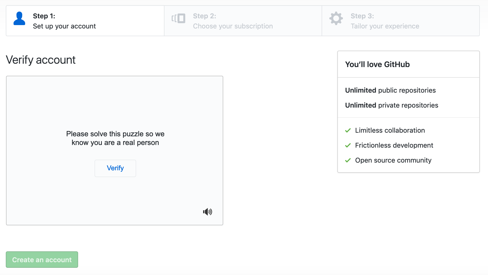
- Choose free option

- Customise experience (skip this step)
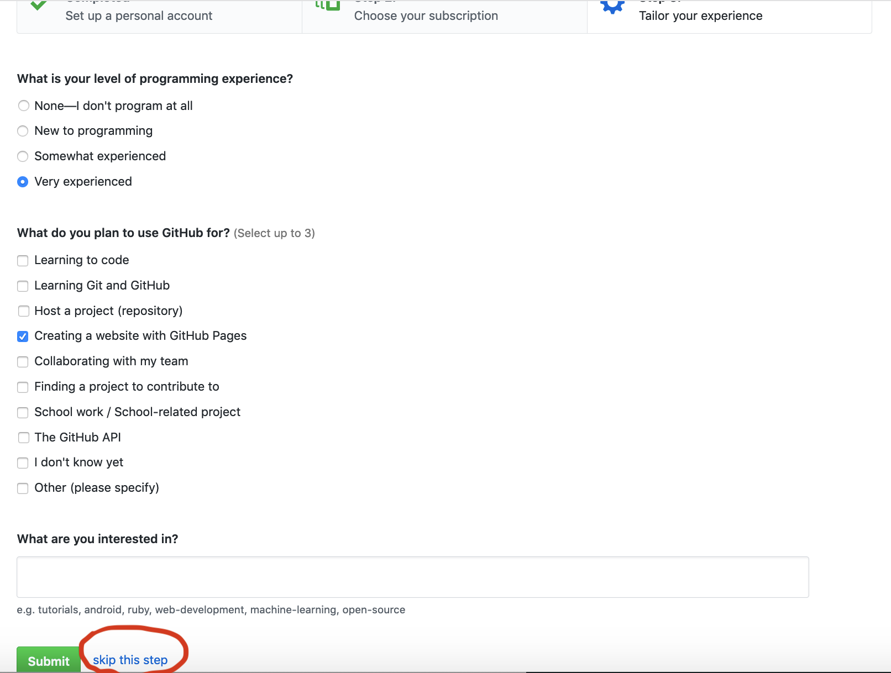
- Verify email address
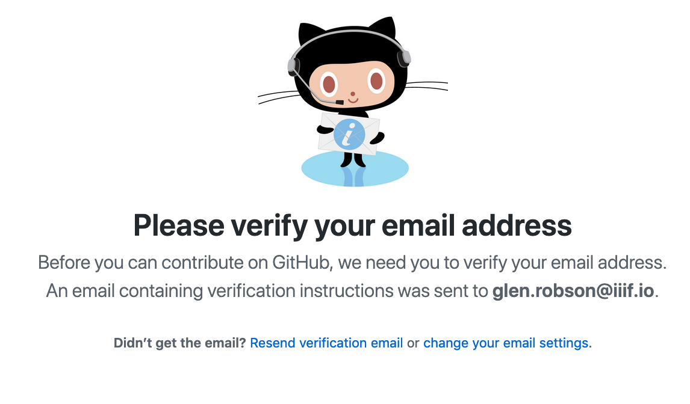
- Success!!

Step 2: Get Read/write access to repo
- Add username to: https://github.com/dhsi-iiif/dhsi-iiif.github.io/issues/1
- You will get an invitation through the email you registered with in GitHub
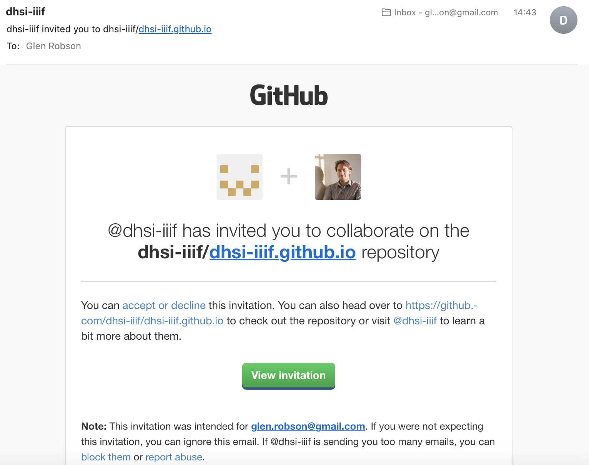
- Accept invitation
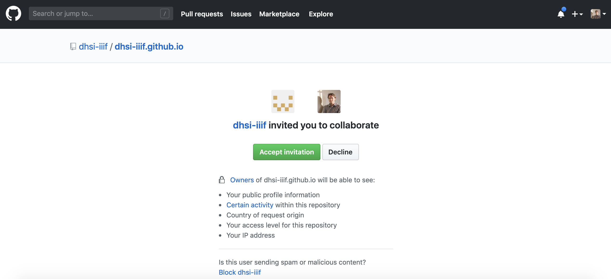
Step 3: Check out repo
The GitHub desktop application manages the upload of your data to GitHub. It is possible to do this through the Git command line but for this part of the workshop it is suggested to use the Desktop version.
- Download and install Github desktop https://desktop.github.com/
- Login
- Click login through website
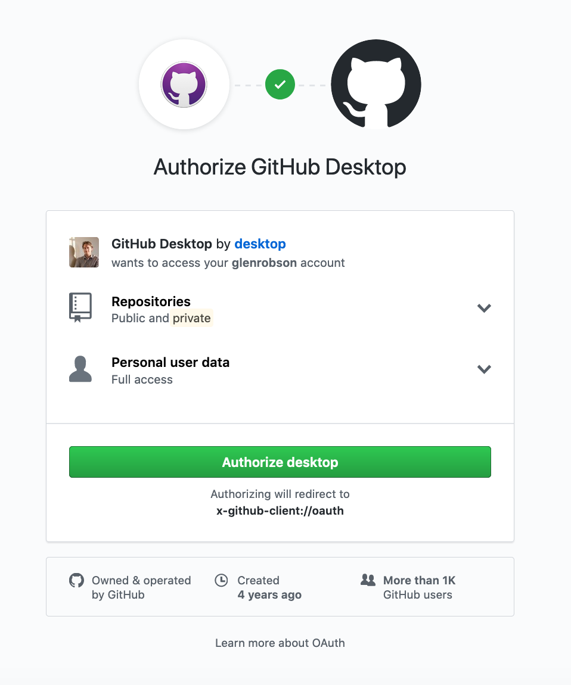
- Configure name and email
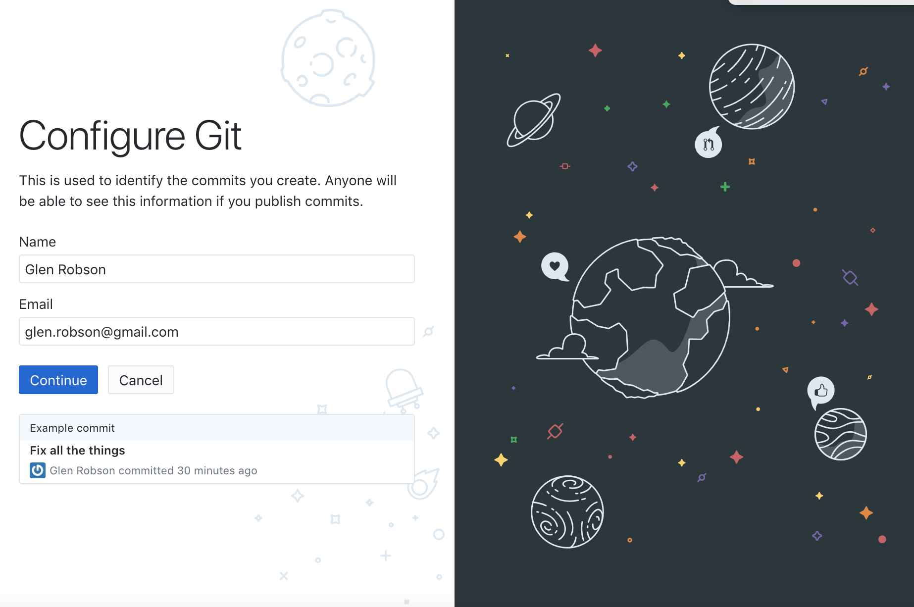
- Download the GitHub dhsi 2019 repository to your local machine in the dhsi2019/dhsi-iiif.github.io. GitHub calls download a repository 'cloning'. So select the dhsi-iiif.github.io repository and click clone.

- Selecting where to download the repo to.

- Click open in Finder or similar for Windows
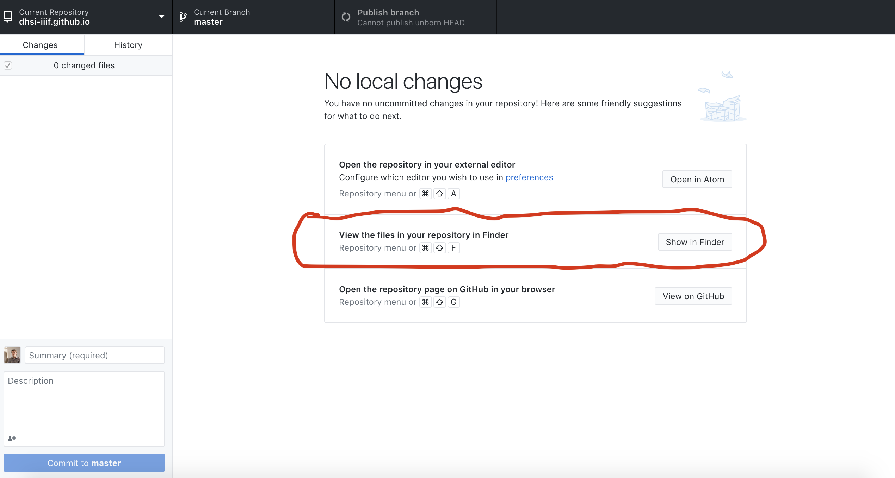
Make a directory inside the 2019 directory for your examples:
dhsi-iiif.github.io/2019/<your_github_user>Step 4: Upload level 0 image
- Download the following zip file which contains an Image split into tiles:
https://iiif.github.io/training/iiif-5-day-workshop/images/page001.zip
Extract zip into:
dhsi-iiif.github.io/2019/<your_github_user>This should create a page001 directory and if you look into this directory you should see familiar directory names which match a IIIF Image request.
- Go to Github Desktop
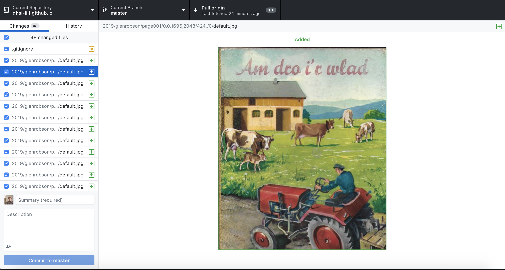
- Add a commit message on the left hand side. Fill in the Summary and a short description.
- Click commit to master
- You now need to send your local changes to GitHub. To do this click the Push Origin button. Note if others in the class are also on this step they may have made changes to GitHub and the GitHub desktop application will not let you send your changes until you have the latest copy from GitHub. If this is the case it may ask you to Pull from origin. If this is the case Pull the latest changes before pushing your changes.
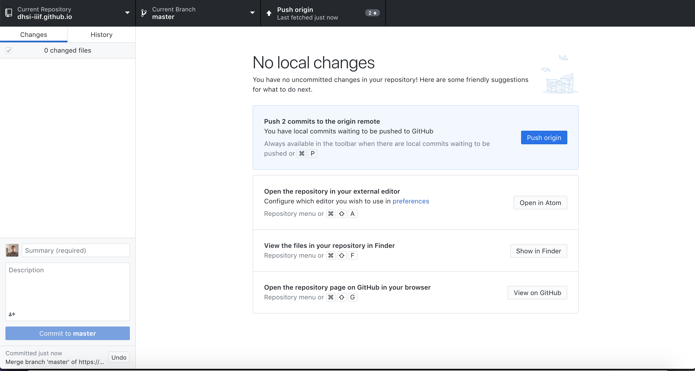
- In your local copy of
2019/<your_github_user>/page001/info.json, open it up in an editor and edit the@idwith:https://dhsi-iiif.github.io/2019/<your_github_user/page001 - As you did earlier add a Commit summary and description then commit and Push changes
- Wait 2mins
- Go to:
https://dhsi-iiif.github.io/2019/<your_github_user>/page001/info.json - and you should see your info.json!
Step 5: View image:
- Leaflet: http://mejackreed.github.io/Leaflet-IIIF/examples/?url=https://dhsi-iiif.github.io/2019/glenrobson/page001/info.json
- Openseadragon: http://iiif.gdmrdigital.com/openseadragon/index.html?image=https://dhsi-iiif.github.io/2019/glenrobson/page001/info.json
- Note not all software works with level 0 images.
Advanced Step 6: Extras make your own static image:
This step allows you to create your own level 0 image. It requires Python which comes installed on MacOS X and can be downloaded for windows at https://www.python.org/downloads/.
- Clone the code repo
- Go to: https://github.com/zimeon/iiif
- Click on
clone or download - Click Open in Desktop
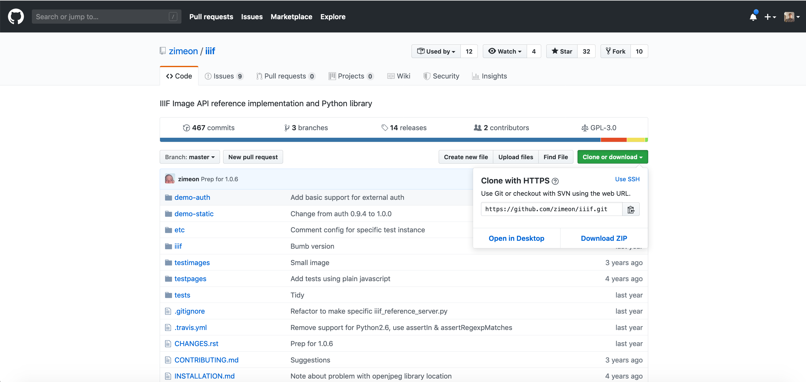
- Save it to
dhsi2019/GitHub/iiif
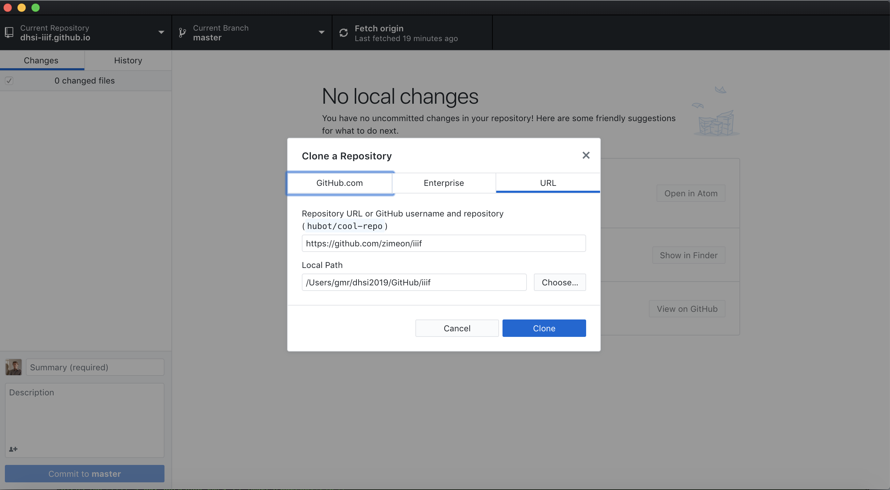
Now open up the terminal or command line and change into the iiif directory:
cd dhsi2019/GitHub/iiif/- Note a simple way to do this is to open up the terminal type
cdthen drag the iiif directory from Finder into the terminal.
- Note a simple way to do this is to open up the terminal type
Install the required libraries. To do this run:
pip install Pillow- If you get a permission denied error then run it as root:
sudo pip install PillowFinally run the command to create the level 0 image. Note the first location is where I want the images to be saved and
~/Pictures/Glen.jpgis a picture in my home pictures directory:./iiif_static.py -d ~/dhsi2019/GitHub/dhsi-iiif.github.io/2019/glenrobson/ ~/Pictures/Glen.jpg
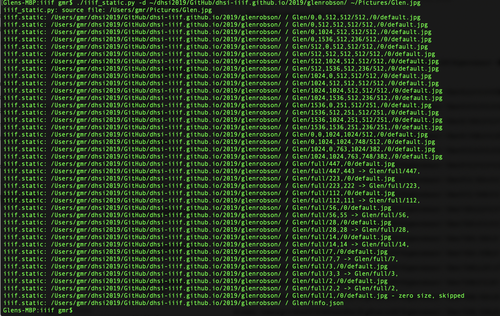
- Finally as you did earlier go to the GitHub desktop application add a Commit summary and description then commit and Push changes
Your image should now be accessiable at
https://dhsi-iiif.github.io/2019/<your_github_user>/<your_image_name>/info.json